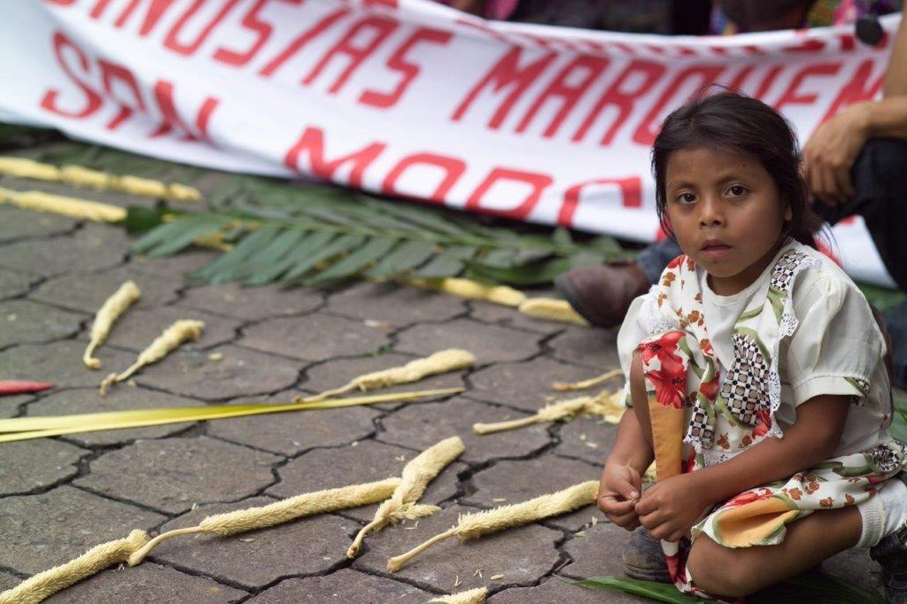
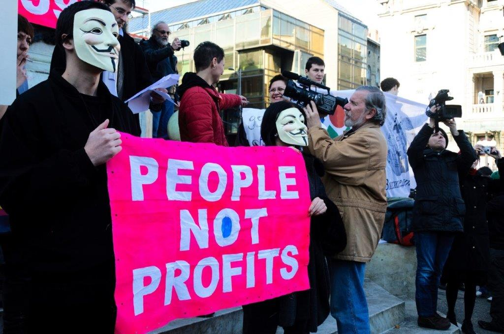
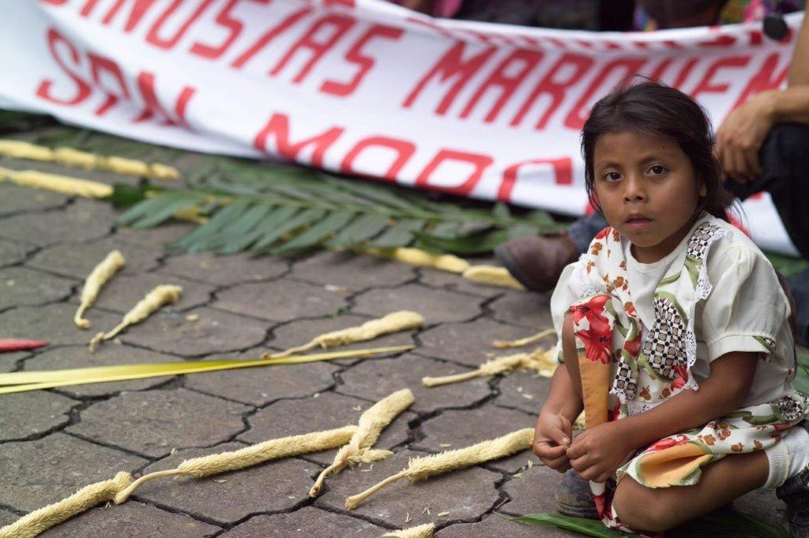
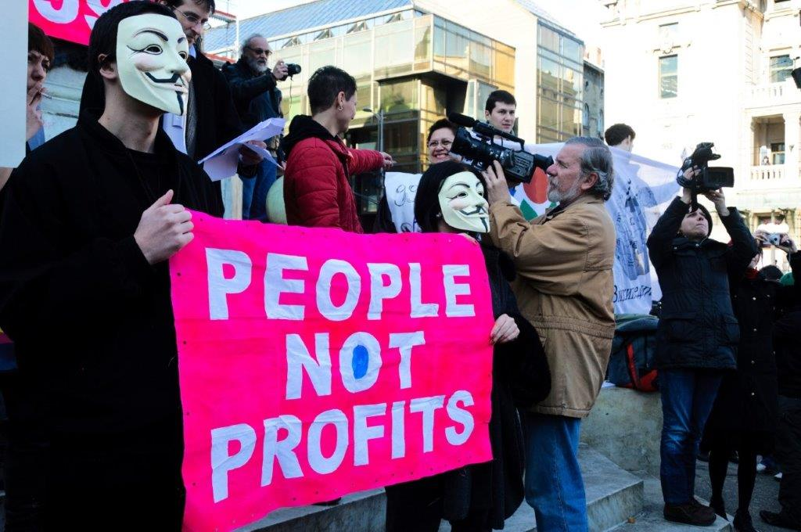


 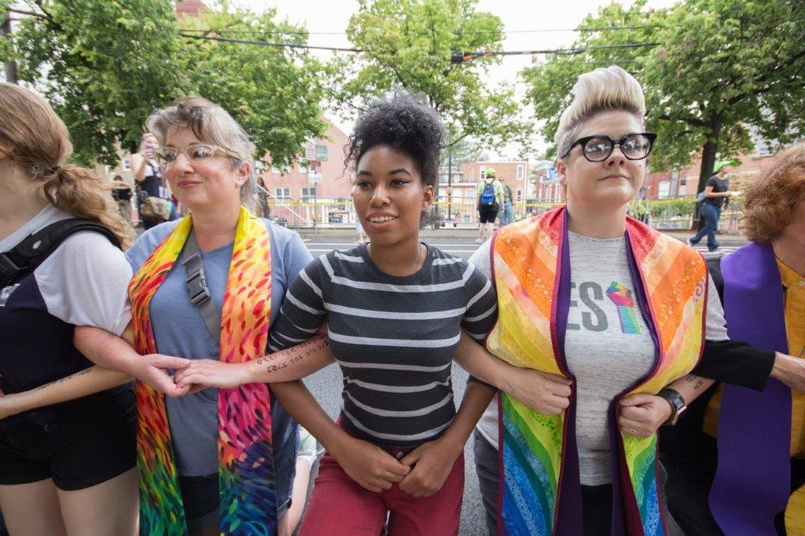
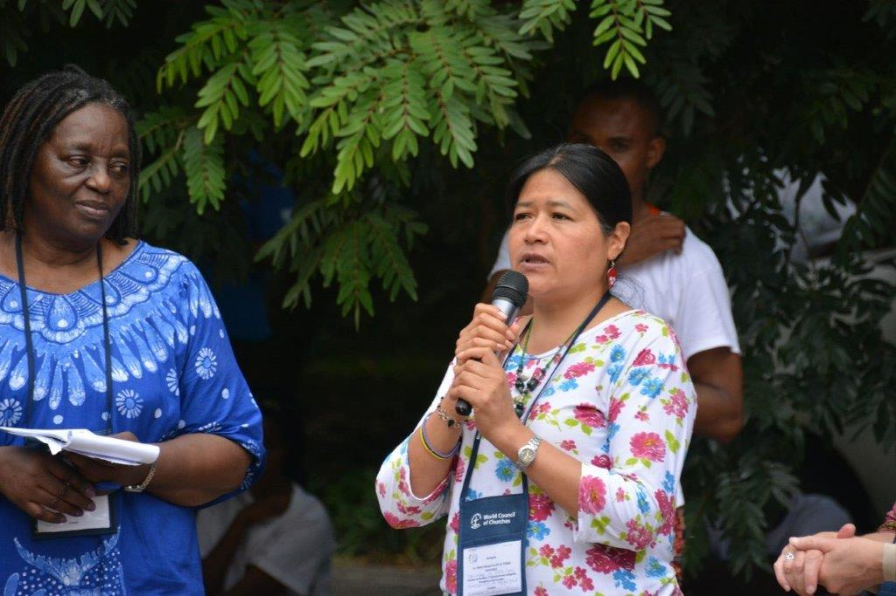
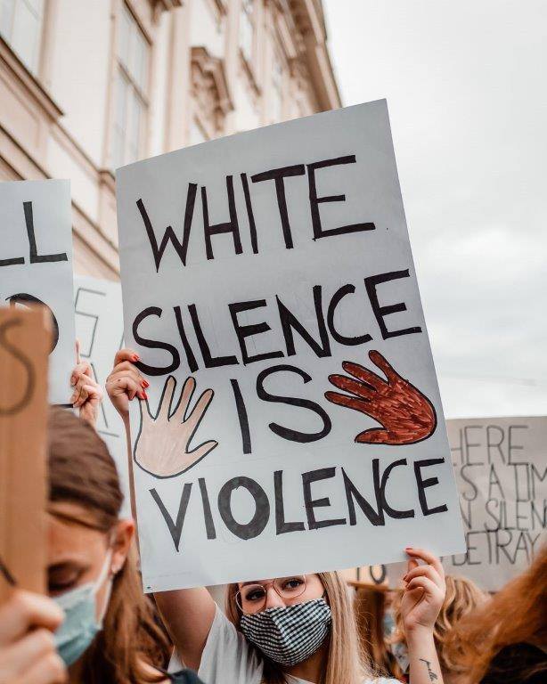
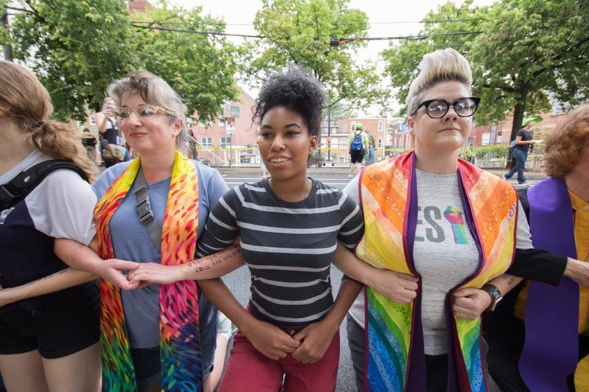
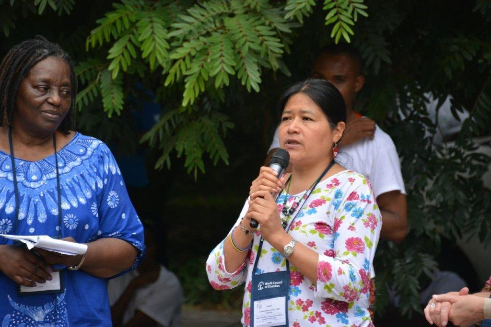
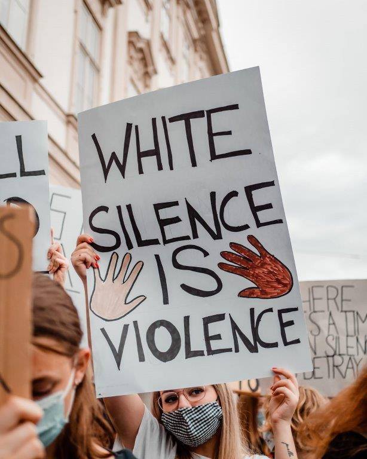
Pro Ökumene
menu expand_less
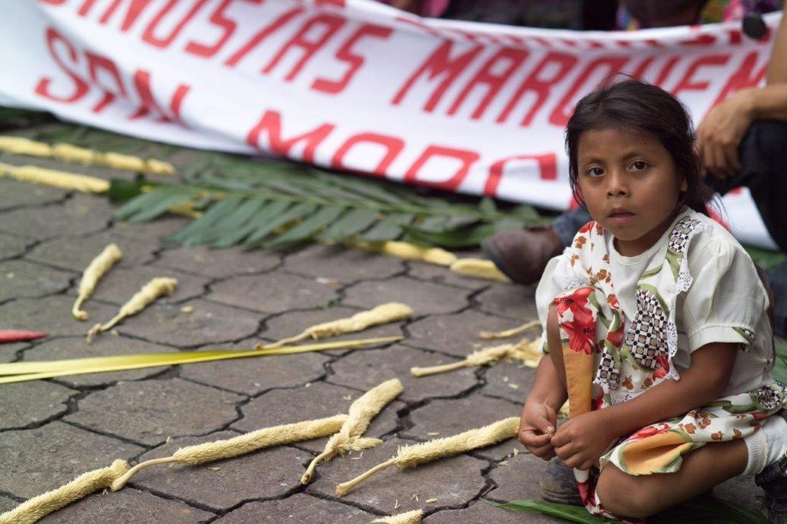
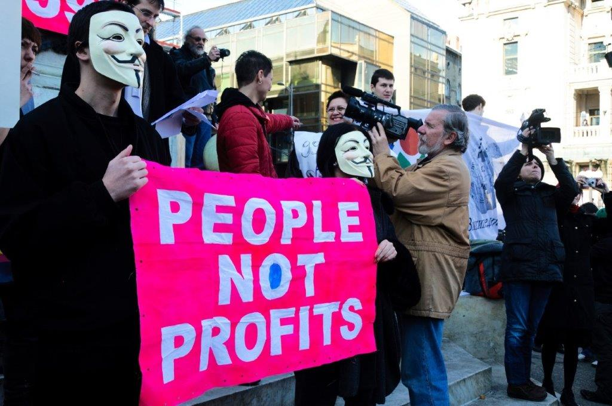
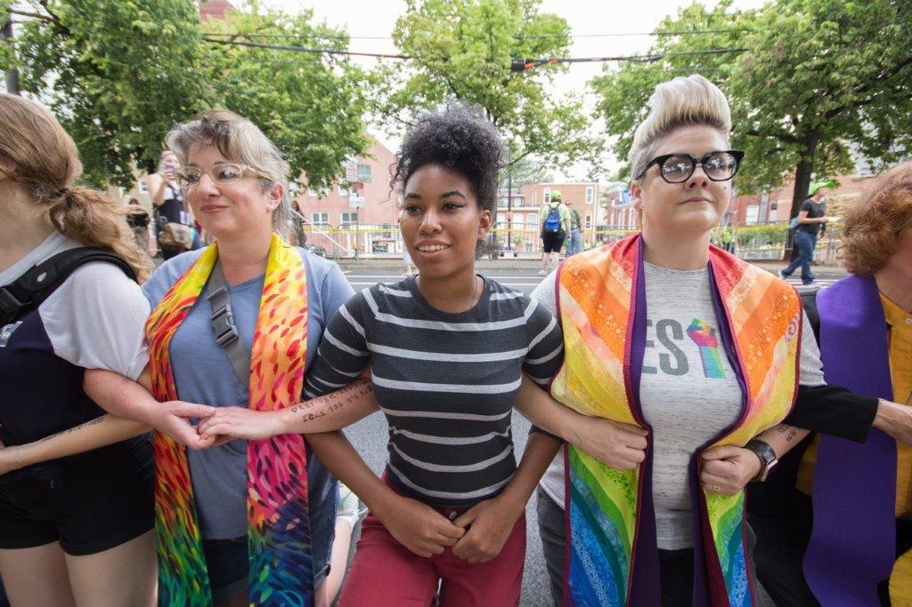
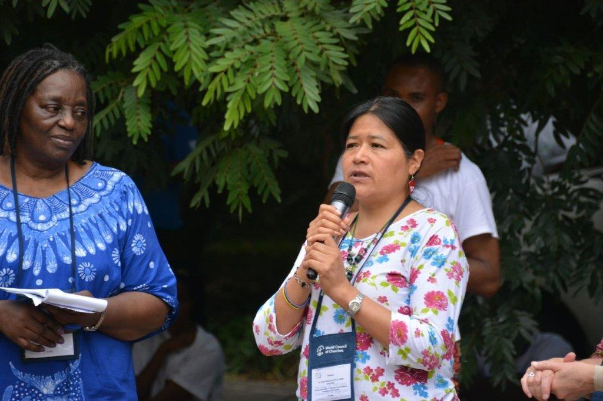
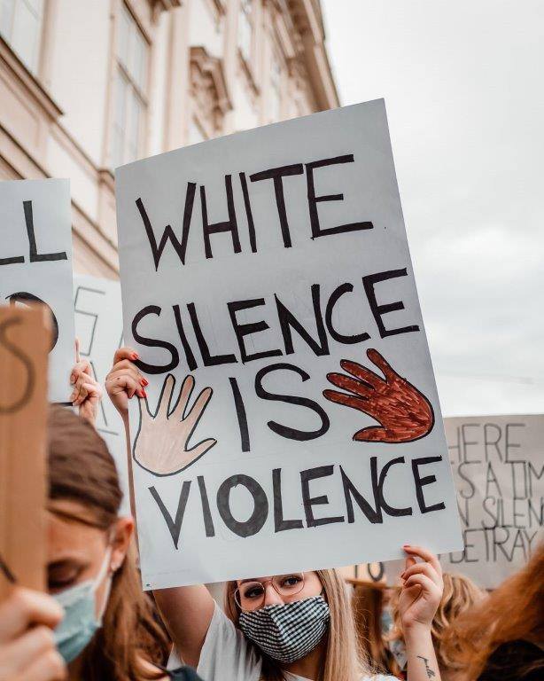

In den 1970er-Jahren wurde der Ökumenische Rat der Kirchen (ÖRK) wegen seines „Programms zur Bekämpfung des Rassismus“ heftig angegriffen. Weite Teile der württembergischen Landessynode forderten den Austritt der Landeskirche aus dem ÖRK. Deshalb fanden sich engagierte württembergische Christinnen und Christen 1975 zusammen und gründeten „Pro Ökumene – Initiative in Württemberg e. V.“, um ein sichtbares Zeichen für die ökumenische Gemeinschaft zu setzen. In den ersten Jahren stand die Solidarität im Kampf um die Überwindung von Apartheid und Rassismus im Vordergrund. „Pro Ökumene“ setzte sich aber allgemein das Ziel, über die Arbeit des ÖRK zu informieren und Themen aus der weltweiten Ökumene zur Sprache zu bringen: Eintreten für weltweite Gerechtigkeit, für einen gerechten Frieden, für die Bewahrung der Schöpfung und Klimagerechtigkeit, für eine Mission und für interreligiöse Beziehungen im Dienst des Lebens, für ökumenisches und interkulturelles Lernen. Dies geschieht durch Veranstaltungen und Publikationen wie dem „Pro Ökumene-Informationsdienst“ und Pressemitteilungen. 50 Prozent des Spendenaufkommens von Pro Ökumene werden dem ÖRK zur Verfügung gestellt, insbesondere für Programme mit jungen Menschen. Aus der Arbeit von Pro Ökumene sind mehrere ökumenische Initiativen hervorgegangen, die selbstständig operieren, so die Initiative „Ohne Rüstung leben“ ( https://www.ohne-ruestung-leben.de/aktuell.html) und die „Stiftung Ökumene“ (https://www.ecunet.de/). Seit 2016 führt „Pro Ökumene“ gemeinsam mit dem Dienst für Mission, Ökumene und Entwicklung (DiMOE), der Evang. Mission in Solidarität (EMS) und anderen Kooperationspartnern die Veranstaltungsreihe „Forum Ökumene“ durch. Drei bis vier Gesprächsabende zu aktuellen Themen pro Jahr dienen der Vernetzung mit ökumenisch interessierten Menschen und stellen eine kritisch-solidarische Öffentlichkeit her. Zur Zeit der Gründung von „Pro Ökumene“ wurde das öffentliche, gesellschaftliche Zeugnis von Christ:innen vielfach grundsätzlich in Frage gestellt. Viele damals umstrittene Themen sind heute im Leben unserer Kirche verankert, in Gemeinden, in lokalen Initiativen, in Partnerschaften, vielfach jedoch an Fachstellen delegiert. Der weltweite Horizont rückt in Zeiten abnehmender Mittel und Mitgliederzahlen ferner. „Pro Ökumene“ hält das Bewusstsein wach, dass wir nur als Teil der „Oikoumene“, des weltweiten Leibes Christi und des ganzen bewohnten Erdkreises, wirklich Kirche sind. „Pro Ökumene“ schafft Räume, in denen Stimmen hörbar werden, die oft an den Rand gedrängt und zum Schweigen gebracht werden.
Ökumenische Vernetzung Casa Común 2022
Martin Gück, Koordinator
Fon: +49 6221 800255 | Mobil: +49 176 54471059
E-mail: info@casa-comun-2022.de | www.casa-comun-2022.de
Ökumenischer Rat der Kirchen (ÖRK)
Ecumenical Centre,
1 Route des Morillons
1218 Le Grand-Saconnex
Switzerland
https://www.oikoumene.org/de
Ohne Rüstung Leben e. V.
Arndtstraße 31
70197 Stuttgart
Telefon 0711 608396
Telefax 0711 608357
https://www.ohne-ruestung-leben.de/impressum.html
Dienst für Mission, Ökumene und Entwicklung der Evangelischen Landeskirche in Württemberg
DiMOE Geschäftsstelle
Büchsenstr. 33
70174 Stuttgart
0711-229363-270
https://www.dimoe.de/
1. Vorsitzender Harald Wagner
harald.wagner45@t-online.de
Dr. Bernhard Dinkelaker
bernhard.dinkelaker@gmail.com
Reinhard Hauff
Reinhard.Hauff@elkw.de